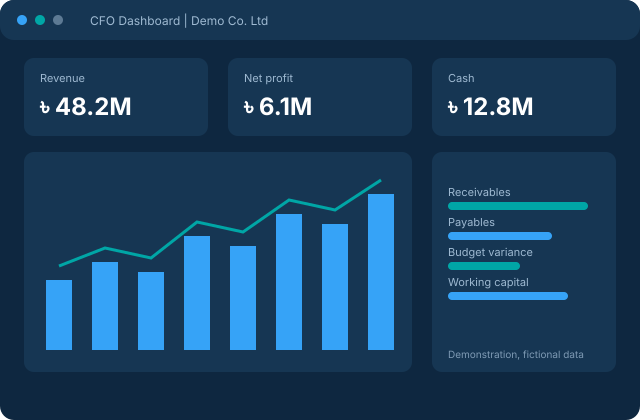
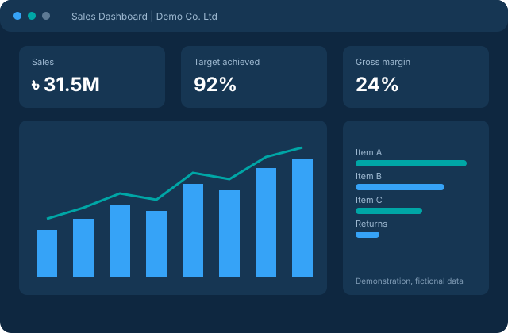
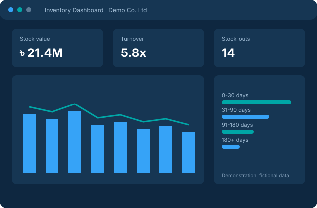
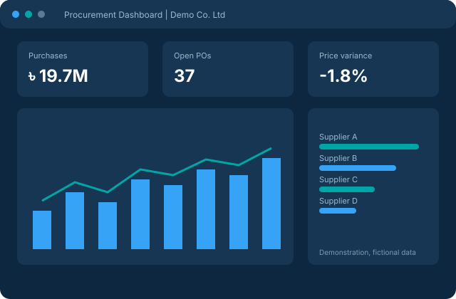

CEO Dashboard
Revenue, profit, cash, growth, working capital and business-unit performance.
Four dashboards for one fictional company, Demo Co. Ltd, with consistent figures.




Revenue, profit, cash, growth, working capital and business-unit performance.
P&L, balance sheet, cash flow, AR/AP, budget variance and financial ratios.
Sales growth, target achievement, gross margin, returns, product and customer mix.
Stock value, turnover, ageing, stock-outs, excess stock and reorder exceptions.
Purchase value, price variance, supplier performance and purchase commitments.
Production cost, material variance, WIP, yield, scrap and output.
Branch revenue, expense, collection and profitability.
Profitability, overdue balances, credit exposure, ageing and payment performance.
| Technology | Potential role |
|---|---|
| Microsoft Power BI | Interactive dashboards, drill-down analysis, KPIs and executive reporting |
| Sage Intelligence | Excel-based reporting and financial analysis |
| Sage Enterprise Intelligence | Self-service and enterprise analytics, subject to availability and compatibility |
| Excel Power Query / Power Pivot | Data transformation, modelling, consolidation and analysis |
| SQL Server / Data Warehouse | Governed extraction, transformation, history and reporting models |
Request a BI demo and we will scope it with you.
Request a BI Demo